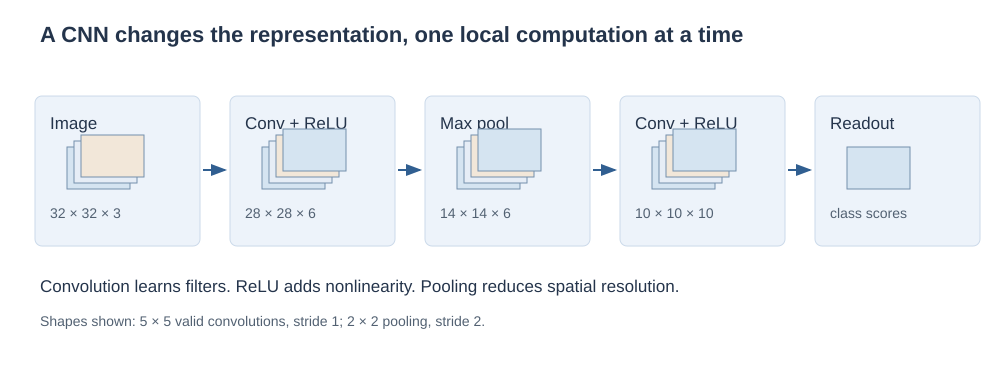
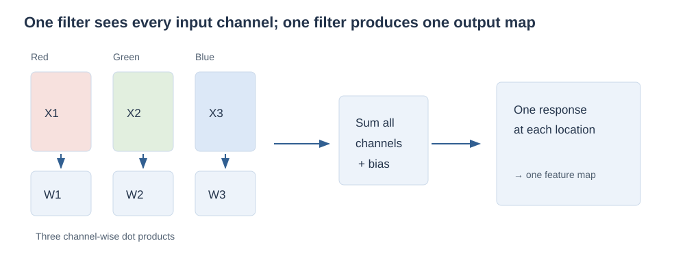
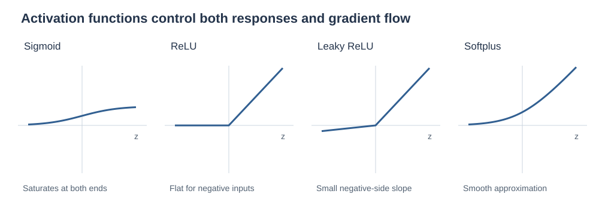
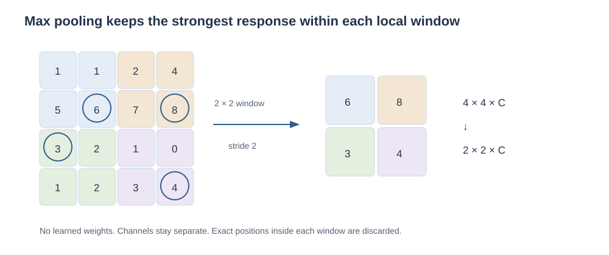
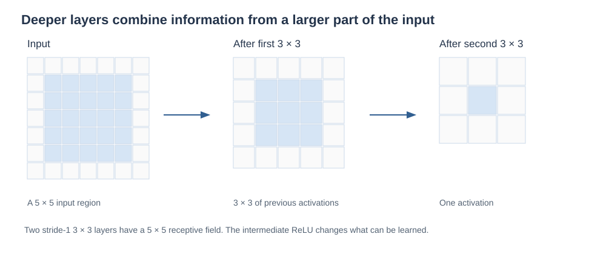
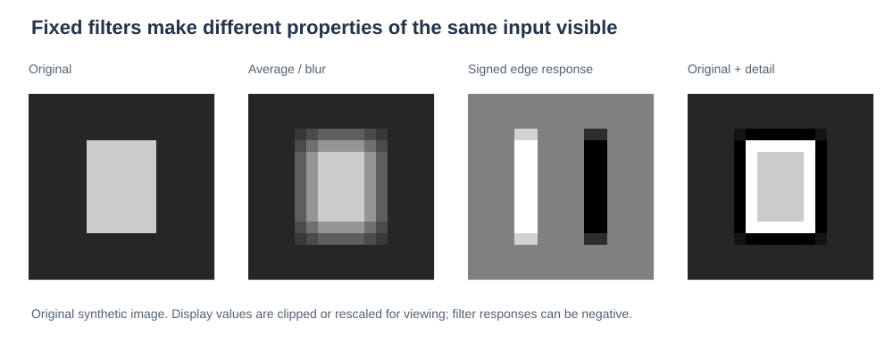

Understanding
convolutional networks
Start with a grid of numbers. Learn how a small shared filter becomes a feature detector, how layers build on one another, and why the details of shapes and gradients matter.
Imagine trying to recognize an edge in a photograph. You do not need to inspect every pixel at once. You need to compare a few nearby pixels, then repeat that comparison across the image. A convolutional neural network turns this idea into a trainable model: local computations, shared parameters, and successive representations.
These notes develop the ideas in the CNN continuation lecture, including its handwritten gradient sketches and its connection to classical image filters. Earlier neural-network ideas are explained when they become necessary. Full convolutional backpropagation, dropout, and batch normalization follow in Training convolutional networks.
What you should be able to do afterward
- Calculate a convolution or cross-correlation by hand and state which convention you used.
- Explain filters, channels, feature maps, locality, and weight sharing.
- Derive output dimensions and parameter counts, including stride and padding.
- Explain pooling, ReLU variants, vanishing gradients, and how shared weights receive gradients.
- Connect fixed image filters to learned features, and reason about what a CNN does and does not guarantee.
How to read: sections 1–4 build the forward operation; 5–8 explain dimensions, nonlinearities, and whole networks; 9–11 connect gradients and image filtering; the remaining sections are for practice and revision. Stop at the short checkpoints and calculate before revealing answers.
Contents · choose a section
1. From pixels to a learning problem
Lecture connection: image representation and CNN architecture; prerequisite bridge from the preceding lecture.
An image is an array with structure
A grayscale image can be represented by a matrix \(X\in\mathbb R^{H\times W}\): \(X_{r,c}\) is the intensity at row \(r\), column \(c\). A color image usually has several numbers per location. With red, green, and blue channels, write \(X\in\mathbb R^{H\times W\times 3}\). Values might be integers from 0 to 255 before preprocessing or real numbers after scaling. Their numerical scale is a preprocessing choice, not a property of convolution.
A tensor here simply means an array indexed along multiple axes. We use height × width × channels in the explanations. A batch adds an example axis. Some software orders the axes differently; the underlying computation is the same. Channel depth counts feature maps at one layer; network depth counts successive layers. Keep these meanings separate.
What an ordinary neuron does
For a vector of inputs \(x=(x_1,\ldots,x_d)\), a neuron forms a weighted sum and then applies a function:
The dot product \(w^\top x\) multiplies corresponding entries and adds the products. The weights decide how each input contributes; the bias shifts the response; the activation \(\phi\) makes the computation nonlinear. A network combines many such computations. Training adjusts its weights and biases to reduce a loss that measures prediction error.
Flattening a 32 × 32 RGB image gives \(32\cdot32\cdot3=3072\) inputs. A dense layer with 1,000 neurons then needs \((3072+1)\cdot1000=3{,}073{,}000\) parameters, including biases. It can learn spatial relationships, but its architecture does not explicitly reuse the same local detector across locations.
The two useful assumptions
Locality: nearby pixels often form useful patterns together. Reuse: a useful pattern, such as an edge, may occur at many locations. A CNN expresses these assumptions through local connections and shared weights. This is an inductive bias: a preference built into the model that narrows the kinds of functions it naturally represents. It is helpful when it matches the problem, but it is not a guarantee of good generalization.

2. What convolution actually computes
Lecture connection: 1D/2D convolution, reversing the kernel, and shared local weights.
Begin in one dimension
A kernel, or filter, is a small collection of coefficients. Slide it across a signal and compute a weighted sum at each position. Suppose the input is \(x=[1,2,4,3]\), and a two-entry kernel is \(k=[1,-1]\). Using the kernel in its displayed order, without padding:
The output measures a local signed difference. Constant neighboring values give zero; a change gives a nonzero response. The sign encodes direction. A kernel \([\tfrac12,\tfrac12]\), in contrast, computes local averages and smooths rapid changes.
Convolution and cross-correlation: state the convention
In mathematical discrete convolution, one sequence is reversed in the weighted sum:
In the finite-window convention commonly used by CNN layers, the displayed kernel is applied directly:
This second operation is cross-correlation for real-valued inputs. Most CNN discussions call it convolution. To compute a valid mathematical convolution using the same window traversal, reverse the kernel first; index origins determine the output's time labels. For the preceding example, reversing \([1,-1]\) gives \([-1,1]\) and the valid-window responses become \([1,2,-1]\).
In two dimensions, the corresponding kernel reversal is a 180° rotation, reversing both rows and columns. Symmetric blur kernels are unchanged by this rotation; asymmetric edge or shift kernels are not. When filters are learned freely, either convention can represent the same family of mappings because a learned filter can be rotated. For a specified numerical kernel, the convention changes the answer.
Move from a line to a grid
For a single-channel input and a 2 × 2 kernel, the valid cross-correlation at the top-left location is:
The general stride-1 expression is:
The indices \(u,v\) run inside the kernel; \(r,c\) locate the output and the corresponding input window. This is a dot product after flattening just the local patch. We have not changed what a neuron computes; we have changed which inputs it sees and where its weights are reused.
A complete 2D example
There are four valid 2 × 2 patches. Apply the same kernel to each:
If a ReLU follows, every negative entry becomes zero. The linear filter's output \(Z\) and the post-activation output \(A\) are different objects. Losing this distinction makes both forward calculations and derivatives harder to follow.
3. Explore a sliding filter
Change an input or a kernel entry. Select an output cell to see its nine multiplications. The outlined input cells are the current window; padding contributes zeros outside the input. This explorer uses one input channel, one output channel, and zero bias.
The convolution workbench
First predict the top-left result. Then change the stride or padding and explain why the number of output cells changes.
Input · 5 × 5
Kernel · 3 × 3
Output · choose a cell
The kernel grid always shows the unrotated coefficients. Checking the rotation option rotates them for the computation. Displayed values are rounded to four decimals; calculations use the stored numbers.
4. Channels, feature maps, and shared weights
Lecture connection: 32 × 32 × 3 inputs, 5 × 5 × 3 filters, multiple output maps, and stacked layers.
One filter spans the input channels
A standard dense convolutional filter with spatial size 5 × 5 applied to an RGB image has shape 5 × 5 × 3. At one position, multiply its 75 weights by the 75 values in the local RGB patch, add all products, then add one bias. The result is one scalar, not three separate output channels.
Slide that filter over the image to obtain one feature map. Use six independently learned filters to obtain six output maps. Stack them along the channel axis. An output channel indexes a filter; an input channel indexes part of that filter's weighted sum.

Write the complete forward equation
Let \(q\) index an output channel, \(d\) an input channel, \(S\) the stride, and \(P\) the symmetric padding on each side. Extend \(X\) by zeros outside its original domain. Then:
Read the equation from the inside out: sum across the input channels and the filter's spatial extent; add the output filter's bias; apply the activation. The output coordinates select a patch but do not select a different set of weights. This is the mathematical statement of weight sharing.
Parameter counting from the definition
Each output filter has \(F_hF_wC_{\mathrm{in}}\) weights. With one bias per filter and \(C_{\mathrm{out}}\) filters:
For six 5 × 5 × 3 filters, that is \((5\cdot5\cdot3+1)6=456\). The output is 28 × 28 × 6 for stride 1 and no padding, so there are 4,704 output activations but only 456 learned parameters. Do not multiply the parameter count by the number of output locations. Those locations reuse the parameters.
Compare this with two alternatives. A locally connected layer without sharing still looks only at patches but learns separate weights at each location. A dense layer connects every output unit to the entire input. Locality reduces the inputs per unit; sharing reduces the number of distinct parameter sets. These are two separate restrictions.
Conventions: the formula above assumes an ordinary, ungrouped convolution and enabled biases. With no bias, omit the +1. Grouped and depthwise convolutions alter channel connectivity; their parameter counts need separate reasoning rather than blind use of this formula.
5. Derive stride, padding, and output dimensions
Lecture connection: filter-size parameters, the 7 × 7 example, stride, and zero padding.
Count the legal starting positions
Consider one axis of length \(N\), a filter of length \(F\), \(P\) zeros on each side, and a positive integer stride \(S\). The padded length is \(N+2P\). If the first window starts at 0, the next starts at \(S\), then \(2S\), and so on. A window starting at \(jS\) fits when its final entry remains inside the padded input:
The largest valid integer \(j\) is the floor of that fraction. Since the count includes \(j=0\), add one:
Apply this independently to height and width. The filter must fit in the padded input for a nonempty output. This formula assumes no dilation and full windows only. The number of output channels is the number of filters, not a consequence of this spatial calculation.
The noninteger trap in the slides
For \(N=7,F=3,P=0\): stride 1 gives 5 positions; stride 2 gives 3 positions; stride 3 gives 2 full-window positions, starting at 0 and 3. The unfloored expression gives \(2\tfrac13\), which cannot be a dimension. Some classroom formulations impose exact divisibility and call such a configuration incompatible. Under the usual floor convention, the trailing incomplete window is simply omitted. State the convention you are using.
Padding changes which patches are available
Without padding, boundary pixels participate in fewer valid windows, and spatial dimensions shrink. Padding adds a chosen boundary extension. Zero padding is common, but reflection and other choices are possible. Padding does not create observed information; it introduces assumptions about values outside the image.
For stride 1 and an odd square kernel, choosing \(P=(F-1)/2\) gives:
A 3 × 3 filter needs one zero border; a 5 × 5 filter needs two. This is the familiar size-preserving case. Even-sized kernels need asymmetric total padding to preserve size at stride 1. With stride greater than one, “same” padding usually targets a downsampled size such as \(\lceil N/S\rceil\); it does not mean the spatial dimensions remain unchanged.
| Input | Filter / stride / padding | Output | Reason |
|---|---|---|---|
| 32 × 32 × 3 | Six 5 × 5 filters, S=1, P=0 | 28 × 28 × 6 | 32 − 5 + 1 = 28 |
| 7 × 7 × 1 | Four 3 × 3 filters, S=2, P=0 | 3 × 3 × 4 | ⌊(7 − 3)/2⌋ + 1 = 3 |
| 7 × 7 × 1 | Four 3 × 3 filters, S=1, P=1 | 7 × 7 × 4 | 7 + 2 − 3 + 1 = 7 |
| 7 × 7 × 1 | Four 3 × 3 filters, S=3, P=0 | 2 × 2 × 4 | Full-window floor convention |
Check a shape and a parameter count
Square input, square filter, no dilation, ordinary channel connectivity, and one bias per output filter. Predict the result before changing the values.
Optional extension: dilation. Spacing kernel taps \(D\) positions apart gives an effective extent \(F_{\mathrm{eff}}=D(F-1)+1\). Replace \(F\) with that extent in the spatial formula. The number of learned taps stays \(F\); dilation changes coverage, not the filter's parameter count.
6. Nonlinearity and the vanishing-gradient problem
Lecture connection: sigmoid saturation, ReLU variants, softplus, and gradient annotations.
Why a nonlinear activation is necessary
A convolution without bias is a linear map. Adding a bias makes it affine. Composing affine layers without any nonlinear operation still produces an affine map:
So depth alone, with only affine computations, does not supply general nonlinear decision functions. Activations such as ReLU allow different behavior in different input regions. Pooling can also be nonlinear, but the point remains: a chain of affine transformations by itself collapses algebraically.
What a derivative tells us during training
A derivative measures how a small change in one quantity affects another. If \(a=\phi(z)\), the chain rule says:
The upstream gradient \(\partial L/\partial a\) describes the downstream loss sensitivity. The local derivative \(\phi'(z)\) scales that signal before it reaches earlier parameters. Across many layers, gradient propagation repeatedly multiplies activation derivatives and weights.
Sigmoid: derive the small derivative
If \(p=\sigma(z)\in(0,1)\), then \(p(1-p)=\tfrac14-(p-\tfrac12)^2\le\tfrac14\). In either saturated tail, the derivative approaches zero. Ten factors of \(1/4\) already give approximately \(9.54\times10^{-7}\), before accounting for the weight factors. This illustrates a mechanism for vanishing gradients; it is not a proof that every deep sigmoid network has that exact gradient. Weight matrices and the loss also matter.

ReLU and its variants
| Activation | Definition | Derivative / learning consequence |
|---|---|---|
| ReLU | \(\max(0,z)\) | 1 for z>0, 0 for z<0. A subgradient convention is chosen at zero, commonly 0. |
| Leaky ReLU | \(z\) for z>0; \(\alpha z\) otherwise, with fixed small positive α. | 1 on the positive side, α on the negative side; allows a negative-side gradient. |
| Parametric ReLU | Same piecewise form, but α is learned. | For z<0, \(\partial a/\partial\alpha=z\). Learning α adds parameters; their sharing scheme must be specified. |
| Softplus | \(\log(1+e^z)\) | \(d a/dz=\sigma(z)\). Smooth; approaches ReLU-like behavior, but the negative tail can still have a small derivative. |
At exactly zero, ReLU has no unique ordinary derivative. Choosing a subgradient allows the training algorithm to proceed. For a particular sample with \(z<0\), a ReLU blocks the gradient through its activation. A dead ReLU usually means the unit remains inactive across the relevant training inputs, so its incoming parameters receive no data-loss gradient through that path. One negative activation for one sample is not enough to call a neuron dead.
ReLU helps because its positive branch has derivative 1. It does not eliminate every source of vanishing or exploding gradients. Large weight products, normalization choices, initialization, architecture, and optimization still affect training.
7. Pooling: retain a response, discard some location detail
Lecture connection: max-pooling windows, stride, and handwritten input/output examples.
Max pooling replaces a local window by its largest entry. Unlike a convolutional filter, standard max pooling has no learned coefficients. It is usually applied independently in each channel. A 2 × 2 window with stride 2 reduces each spatial side by roughly a factor of two while keeping the channel count.

The same window-count argument gives the output shape, subject to the operation's padding and rounding convention. Pooling can overlap when the stride is smaller than the window size. It can also discard information: after a max has been taken, its exact position inside the window is no longer represented in the pooled value.
A short gradient intuition
If a pooling window is \([1,6;3,2]\) and the incoming loss gradient is \(g\), the unique maximum 6 receives \(g\) and the other three entries receive zero. If pooling windows overlap, gradients from different windows add when they reach the same input. At ties, max is nondifferentiable and a valid gradient-routing convention must be chosen; software commonly records a selected maximum.
Equivariance is different from invariance
Translation equivariance means shifting the input shifts the output correspondingly: \(f(Tx)=T f(x)\). A stride-1 convolution with spatially shared weights has this property on an infinite grid, or away from finite boundaries with compatible handling. Translation invariance means the output itself stays unchanged: \(f(Tx)=f(x)\).
Pooling can make a local response less sensitive to small movements within the same pooling window. A movement across window boundaries can change the result. Striding also makes exact equivariance to arbitrary one-pixel shifts fail. Do not claim that convolution or max pooling automatically makes the entire classifier translation invariant.
8. Build a network and track what changes
Lecture connection: successive convolutional layers and increasingly complex learned features.
Trace one complete example
Consider this small classifier. All convolutions use stride 1, no padding, and one bias per output channel. Pooling uses a 2 × 2 window with stride 2.
| Stage | Output shape | Parameters |
|---|---|---|
| RGB input | 32 × 32 × 3 | 0 |
| Six 5 × 5 filters + ReLU | 28 × 28 × 6 | (25 × 3 + 1) × 6 = 456 |
| 2 × 2 max pool | 14 × 14 × 6 | 0 |
| Ten 5 × 5 filters + ReLU | 10 × 10 × 10 | (25 × 6 + 1) × 10 = 1,510 |
| Flatten | 1,000 | 0 |
| Dense layer, 10 scores | 10 | (1,000 + 1) × 10 = 10,010 |
Total parameters: \(456+1510+10010=11{,}976\). Notice that the small dense readout holds most of them. Spatial outputs, stored activations, arithmetic operations, and learned parameters are distinct quantities. A layer with few shared parameters can still require substantial computation because each parameter is reused many times.
For a convolution, a useful rough multiply-accumulate count is \(H_{\mathrm{out}}W_{\mathrm{out}}C_{\mathrm{out}}F_hF_wC_{\mathrm{in}}\), ignoring biases and activations. This is an operation count, not a parameter count. Hardware efficiency also depends on how the operation is implemented and how data move through memory.
How far can one output “see”?
The receptive field of an activation is the region of the original input that can influence it. A first 3 × 3 convolution sees 3 × 3 input positions. A second stride-1 3 × 3 layer combines neighboring first-layer responses, so it sees 5 × 5 of the original input, not 9 × 9.

To derive the general recurrence, track \(R_\ell\), the receptive-field side length, and \(J_\ell\), the spacing in original-input coordinates between adjacent layer-\(\ell\) activations. Initially \(R_0=1,J_0=1\). For kernel side \(F_\ell\) and stride \(S_\ell\), without dilation:
The new window spans \(F_\ell-1\) gaps between preceding activations; each gap is \(J_{\ell-1}\) original pixels. That explains the first equation. Moving the new window by one output position moves it by \(S_\ell\) preceding positions, which explains the second.
For the classifier above, the first convolution gives \(R=5,J=1\); pooling gives \(R=6,J=2\); the second convolution gives \(R=14,J=2\). This is the theoretical span of dependencies for an interior unit. Padding can include artificial boundary values, and learned weights determine how strongly individual pixels affect the result.
Why successive features can be more complex
Early filters may respond to local contrasts, orientations, or colors. Later filters combine patterns in these responses, allowing textures, arrangements, and more task-specific structure to matter. This is an interpretation of learned representations, not a rule assigning every neuron one named object part. Features can be distributed, redundant, and dependent on the task and training data.
Two stride-1 3 × 3 layers can cover a 5 × 5 region. With intermediate activations they can compute nonlinear combinations unavailable to one purely affine 5 × 5 layer. If all channel counts equal \(C\), two such convolutions use \(18C^2\) weights versus \(25C^2\) for a single 5 × 5 layer, excluding biases. The comparison assumes those channel counts; it is not universally true for arbitrary layer widths.
9. Why a shared filter gets a sum of gradients
Lecture connection: handwritten chain-rule sketches; bridge to the following backpropagation lecture.
We can explain the essential gradient argument now without deriving the entire training algorithm. Write \(L\) for one example's scalar loss and define \(\delta_{r,c,q}=\partial L/\partial Z_{r,c,q}\). This quantity already includes the effect of the activation and all later layers. Treat it as known while computing a local filter derivative.
Start with one occurrence of a weight
In the forward equation, differentiating a weighted sum with respect to one coefficient leaves its input value. Thus:
The same parameter occurs at many output locations. The multivariable chain rule must collect all of those paths:
Likewise, because \(\partial Z_{r,c,q}/\partial b_q=1\):
This sum is a consequence of reuse, not an extra heuristic added to training. A mini-batch loss adds contributions across examples too; an averaged loss includes the corresponding averaging factor.
A tiny shared-weight calculation
Use the earlier 3 × 3 input and 2 × 2 kernel, and suppose \(\delta=\begin{bmatrix}1&2\\3&4\end{bmatrix}\). The top-left kernel coefficient multiplies input entries 1, 2, 0, and 1 at the four positions. Therefore:
For the bottom-right coefficient, the inputs are 1, 3, 1, and 1, giving \(1+6+3+4=14\). Different positions can reinforce or oppose each other, so shared-gradient contributions can cancel. Gradient descent updates a coefficient with \(w\leftarrow w-\eta\,\partial L/\partial w\), where \(\eta>0\) is the learning rate.
Boundary of this chapter: the following chapter derives gradients with respect to earlier activations and completes convolutional backpropagation, then covers dropout and batch normalization. The shared-weight argument is included here because it appears in the lecture's annotations and explains how a reusable detector can be learned.
10. Classical image filters: interpret the numbers
Lecture connection: averaging, thresholding, shifts, blurring, edge detection, sharpening, and families of fixed filters.
A CNN did not invent sliding a filter over an image. Classical image processing chooses coefficients to produce a desired transformation. A CNN learns coefficients from a task objective. Understanding fixed filters gives concrete examples of what a local weighted sum can measure.

The lecture also shows three image-to-image tasks. Denoising estimates a cleaner image from a corrupted observation; averaging is a simple baseline, but it can erase edges along with noise. Super-resolution estimates a higher-resolution image from lower-resolution data; missing detail cannot generally be recovered uniquely, so assumptions or learned prior structure matter. Inpainting estimates missing or damaged regions using surrounding information and model assumptions. These tasks illustrate that CNN outputs need not be class labels: a model can produce an image-shaped output instead.
Identity, averaging, and Gaussian smoothing
An identity filter has a 1 at the center and zeros elsewhere. A 3 × 3 box average assigns each location weight \(1/9\). Both have coefficient sum 1, so a constant input remains the same away from boundary effects. Averaging reduces rapid local variation but also blurs edges. It may suppress noise; it does not preserve every useful detail.
The displayed Gaussian-like kernel weights nearby central pixels more strongly. In a continuous model, a Gaussian smoothing kernel is proportional to \(\exp(-(x^2+y^2)/(2\sigma^2))\), normalized to integrate to one. Larger \(\sigma\) produces broader smoothing. Discrete implementations sample or approximate that shape and normalize the weights.
A shift depends on the convention
Using centered cross-correlation, a 1 immediately to the left of the kernel's center gives \(Y_{r,c}=X_{r,c-1}\), so visible content shifts right. With mathematical convolution, the kernel is reversed, and the displayed coefficient placement giving the same shift is reversed too. Specify boundary filling when shifting a finite image.
Edges are local changes
The difference \(x_t-x_{t-1}\) approximates a derivative along one axis. A 2D derivative-like filter compares neighboring rows or columns. An example for horizontal intensity changes, using cross-correlation, is:
The first is a Sobel-style directional filter. The second is a discrete Laplacian, combining second differences in two directions. Their coefficient sums are zero: on a constant patch, positive and negative contributions cancel. The magnitude of an edge response measures a change; its sign can encode its direction. Transposing the directional kernel changes the orientation it detects.
Sharpening: add back the detail
Let \(B(X)\) be a blurred image. Define a detail image \(D=X-B(X)\). Adding some detail back gives:
If \(B\) is a linear filter with kernel \(K_B\), the combined operation has kernel \((1+\lambda)K_{\mathrm{id}}-\lambda K_B\). With \(\lambda=1\) and the box average, the center is \(17/9\) and the eight surrounding entries are \(-1/9\). Another common sharpening kernel is \([0,-1,0;-1,5,-1;0,-1,0]\). Both preserve constants in the interior because their coefficients sum to 1. Sharpening can amplify noise and create values outside the original intensity range; clipping for display is a separate nonlinear step.
Thresholding is a different kind of operation
The lecture also shows binarization: output 255 if an intensity exceeds 100, otherwise output 0. This is a pointwise nonlinear threshold. It cannot in general be represented by a single fixed linear convolution. A filter can compute a response that a later threshold acts on, but the two steps have different mathematical roles.
Higher-order Gaussian derivatives extend the same idea: smooth with a Gaussian and measure changes with derivatives of different orders and orientations. Their responses emphasize different local structures. The broad connection is that a bank of filters can represent an image through many complementary local measurements.
Other named feature families
The slides mention several topics for further exploration. These brief connections preserve that scope; full treatments can become separate foundation notes.
| Family | What it represents or emphasizes | Connection to this chapter |
|---|---|---|
| Fourier transform / FFT | Represents a signal in frequency components; FFT names an efficient algorithm for the discrete transform. | Convolution corresponds to multiplication in the frequency domain under compatible boundary conventions. |
| Discrete cosine transform | A cosine-basis representation often useful for concentrating smooth-image information in relatively few coefficients. | Fixed transform features can be contrasted with features learned for a task. |
| Haar / wavelets | Localized averages and differences across scales. | Describe both location and scale; connect to multiscale representations. |
| Gabor filters | An oscillation localized by an envelope, often Gaussian. | Respond to particular orientations and spatial frequencies. |
| SIFT / HOG | Engineered descriptors using local gradient structure; their pooling and normalization choices differ. | Examples of deciding the feature representation before fitting the final predictor. |
11. Learned representations and the lecture's broader perspective
Lecture connection: preselected versus learned features and the closing historical slides.
In a classical feature pipeline, an engineer might compute HOG descriptors and train a classifier on them. In a CNN, the loss can influence the convolutional filters through backpropagation, so feature extraction and the predictor are trained together. This is the essential meaning of learning a representation for the task.
The lecture describes learning useful or “optimal” features. Read that as the modeling aim. Training a nonconvex network does not in general certify globally optimal features or good behavior outside the training distribution. A learned detector can exploit a shortcut, such as a background cue, if that shortcut reduces the training objective.
The closing slides place neural networks within recurring periods of enthusiasm and disappointment, marking early perceptrons, the 1980s neural-network period, and the 2012 deep-CNN milestone. The proposed future curves are speculative illustrations, not a statistical law or a forecast to memorize. The useful lesson is to distinguish demonstrated capability, the conditions enabling it, and claims that go beyond the evidence.
12. Practice: retrieve, calculate, and derive
These are original practice questions written for these notes, not reproduced past-paper questions. Attempt each on paper before opening a hint. A correct number is only part of the answer: state the convention and assumptions that produce it.
1 · A one-dimensional filter
For \(x=[2,0,1,3]\), \(k=[1,2]\), stride 1, no padding, and no bias, calculate valid cross-correlation. Then reverse the kernel and repeat.
Hint
There are three length-2 windows. Write out the two products in each window.
Solution and reasoning
Cross-correlation gives \([2(1)+0(2),\;0(1)+1(2),\;1(1)+3(2)]=[2,2,7]\). With the reversed kernel \([2,1]\), the results are \([4,1,5]\). Asymmetry makes the reversal visible.
2 · Four patches, one shared kernel
Reproduce the 3 × 3 input and 2 × 2 kernel from section 2. Compute all four outputs without looking back at the worked values. Then apply ReLU. How many kernel weights were learned, assuming one output channel?
Solution and reasoning
The pre-activation output is \(\begin{bmatrix}0&-1\\-1&0\end{bmatrix}\), and ReLU produces zeros everywhere. There are four kernel weights; including one bias would give five parameters. Four output locations do not multiply the number of distinct weights.
3 · Shape and parameters together
A 28 × 28 × 3 input passes through sixteen 3 × 3 filters with stride 2, padding 1, and one bias per output channel. Find the output shape and the number of learned parameters.
Hint
Calculate one spatial side first. Then count weights per filter across all three input channels.
Solution and reasoning
The output is 14 × 14 × 16. Stride and padding change the number of applications of the filter, not its number of coefficients.
4 · The incomplete-window case
Use an input axis of length 8, filter length 3, stride 2, and no padding. List all valid starting positions. Is the final input position used?
Solution and reasoning
The starting positions are 0, 2, and 4. A start at 6 would require indices 6, 7, and 8, but index 8 lies outside the input. The output length is \(\lfloor(8-3)/2\rfloor+1=3\). The final input index 7 is unused. An exact-divisibility classroom rule would reject this configuration; the floor convention accepts it and drops the incomplete window.
5 · A second layer does not see RGB directly
A 28 × 28 × 6 activation volume passes through ten 5 × 5 filters, stride 1, no padding. What is each filter's shape, the output shape, and the parameter count including bias?
Solution and reasoning
Each filter is 5 × 5 × 6 because the current input has six channels. The output is 24 × 24 × 10. The parameter count is \((5\cdot5\cdot6+1)10=1510\). Using three input channels would mistakenly refer back to the original image rather than this layer's input.
6 · Pooling and gradient routing
Use the 4 × 4 input from the pooling diagram. Calculate its 2 × 2, stride-2 max-pool output. If the four output gradients are all 1, which input entries receive them? Assume the unique maxima shown in the diagram.
Solution and reasoning
The output is \(\begin{bmatrix}6&8\\3&4\end{bmatrix}\). Using zero-based indices, gradients of 1 go to input positions (1,1), (1,3), (2,0), and (3,3). Other entries get zero from this pooling operation. These windows do not overlap, so there is no accumulation between them.
7 · Derive an entire shared-kernel gradient
For the 3 × 3 input in section 2 and a 2 × 2 filter, suppose the gradient with respect to its pre-activation output is \(\delta=\begin{bmatrix}1&2\\3&4\end{bmatrix}\). Compute the 2 × 2 kernel gradient and the bias gradient. Use stride 1 and no padding.
Hint
For each kernel position, collect the four input entries that coefficient multiplied, then weight those entries by the corresponding δ values.
Solution and reasoning
So \(\nabla_KL=\begin{bmatrix}9&17\\12&14\end{bmatrix}\) and \(\partial L/\partial b=10\). δ is given at the pre-activation output; do not apply an extra ReLU derivative to it.
8 · Outputs and slopes are separate questions
Evaluate ReLU and leaky ReLU with α=0.1 at z=−2, 0, and 3. State their slopes at −2 and 3. Explain why a sigmoid derivative can be small at both large positive and large negative inputs.
Solution and reasoning
ReLU gives [0,0,3]; leaky ReLU gives [−0.2,0,3]. At −2, the slopes are 0 and 0.1 respectively; at 3, both slopes are 1. At zero, a derivative convention is required for either piecewise function when α≠1. For sigmoid, \(\sigma(z)(1-\sigma(z))\) approaches zero as σ approaches either 0 or 1.
9 · Receptive fields with a stride change
Three convolutions have kernel sides 3, 3, 3 and strides 1, 2, 1 respectively. With no dilation, find the receptive-field side and effective input spacing after each layer.
Hint
Initialize R=1 and J=1. Update R using the preceding J before updating J with the new stride.
Solution and reasoning
Layer 1: R=3, J=1. Layer 2: R=3+2×1=5, J=2. Layer 3: R=5+2×2=9, J=2. Multiplying kernel sizes would give the wrong answer because the windows overlap.
10 · Diagnose a mistaken explanation
A candidate says: “A 5 × 5 × 3 filter gives three output channels, and we learn new weights at each of the 28 × 28 positions. Max pooling then makes the classifier invariant to every translation.” Identify three mistakes.
Solution and reasoning
First, the three input-channel contributions are summed: one filter gives one output map. Second, its weights are shared across all positions. Third, local max pooling can reduce sensitivity to some movements but does not guarantee global translation invariance. Boundaries, stride, window alignment, and the rest of the network matter.
11 · Reason about a filter without applying it everywhere
What happens to a constant patch under the box-average kernel and under the Sobel-style difference kernel? Why might the answer differ at a zero-padded boundary?
Solution and reasoning
For constant value c, a linear filter gives c times the sum of its coefficients. The average has sum 1, so its output is c; the difference filter has sum 0, so its output is zero. At a zero-padded boundary, a nonzero constant image no longer presents a constant patch: some entries are artificial zeros. The cancellation or preservation argument no longer applies to that mixed patch.
12 · A full forward-pass accounting problem
Reconstruct the classifier in section 8: 32 × 32 × 3 input; six 5 × 5 filters; ReLU; 2 × 2 stride-2 max pool; ten 5 × 5 filters; ReLU; flatten; ten dense outputs. Convolutions are valid, stride 1, with bias. Derive every shape, count all parameters, and find the receptive field before flattening.
Solution and reasoning
The shapes are 28 × 28 × 6 → 14 × 14 × 6 → 10 × 10 × 10 → 1,000 → 10. ReLU preserves shape and has no learned parameters. Convolutional parameter counts are 456 and 1,510; pooling and flattening add none; the dense layer adds 10,010. The total is 11,976. The receptive-field sequence is (R,J)=(5,1), then (6,2), then (14,2). A dense score can depend on all flattened positions, so do not confuse the final convolutional unit's receptive field with the entire classifier's coverage.
13. Explain it in an interview
Use these prompts after you understand the derivations. Give a short answer first, then support it with an equation or example. The comparisons below extend the lecture's ideas into practical reasoning.
“Explain a CNN without using a list of layer names.”
A CNN repeatedly applies learned local pattern detectors across an input. Reusing a detector's weights at each position reduces the distinct parameters and expresses the assumption that useful patterns can occur in different places. Nonlinearities let later stages combine responses into more complex features, and a task-specific readout turns the representation into a prediction.
“Why use a CNN instead of a dense network for an image?”
A CNN builds in local connectivity and spatial weight reuse, which often match image structure and greatly reduce parameter counts. A dense model can represent many of the same relationships but must learn them without that architectural constraint. The tradeoff is a stronger assumption about spatial regularity; convolution alone does not efficiently provide every kind of long-range interaction.
“Does doubling the image resolution quadruple the parameters?”
For a fixed convolutional filter bank, no: the parameters depend on filter size and channels. The number of output activations and operations can grow roughly fourfold when both spatial sides double. A flattened dense readout can also gain parameters because its input dimension changes. Specify which layers you are discussing.
“Can a 1 × 1 convolution do anything useful?”
Yes. At each location it computes a learned combination of the input channels, giving one or more new channels. Its direct spatial receptive field is one location, but its channel computation can be rich. With C input channels and D outputs, it uses (C+1)D parameters including biases. This is a supplementary extension of the same forward equation.
“Why can the convolution workbench give negative values?”
A weighted sum is not constrained to the display range of image intensities. Edge filters often use negative weights and produce signed responses. An activation can change those values afterward. Rescaling a feature map for visualization should not be confused with changing the network's mathematical computation.
“The network's dimensions fit, but learning fails. What would you inspect?”
Check input scaling and labels, the loss/readout pairing, activation saturation or inactive units, gradient magnitudes, initialization, learning rate, and whether the model can fit a small training subset. Verify that training and evaluation behave consistently where required. This is a practical debugging checklist, not a claim that any one issue must be the cause.
“Does a learned feature map prove the model understands the object?”
No. A response shows what changes a particular representation under the data and analysis method used. The model may rely on backgrounds, textures, or other shortcuts. Evaluate behavior under relevant variations and inspect failures instead of assigning human meaning to a filter from one visualization.
14. Revision: formulas, assumptions, and mistakes
| Question | Recall | Assumption to say aloud |
|---|---|---|
| Output side | \(\lfloor(N+2P-F)/S\rfloor+1\) | Full-window floor convention; no dilation; symmetric padding. |
| Output channels | Number of output filters | One filter yields one output map after summing input channels. |
| Parameters | \((F_hF_wC_{in}+1)C_{out}\) | Ungrouped convolution; one enabled bias per output channel. |
| ReLU | \(a=\max(0,z)\) | Slope 1 at z>0, 0 at z<0; convention needed at zero. |
| Sigmoid derivative | \(\sigma(z)(1-\sigma(z))\) | Maximum 1/4; saturation shrinks the local gradient. |
| Kernel gradient | Sum of δ × matching input values | δ is the gradient with respect to pre-activation Z. |
| Receptive field | \(R'=R+(F-1)J,\quad J'=SJ\) | No dilation; J is measured in original input coordinates. |
| Pooling | One max per window, per channel | No learned coefficients; shape/rounding conventions still matter. |
| Sharpening | \(Y=X+\lambda(X-B(X))\) | Linear combined kernel if B is linear; display clipping is separate. |
Common mistakes worth catching early
- Mixing up the number of filters with the number of input channels.
- Multiplying the parameter count by the number of spatial output locations.
- Ignoring the floor or not declaring an exact-divisibility convention.
- Using an asymmetric fixed kernel without stating whether it is rotated.
- Calling pooling a learned weighted sum or claiming it gives complete shift invariance.
- Applying an activation derivative twice when δ already refers to pre-activation.
- Assuming ReLU guarantees stable gradients or that every negative response is a dead neuron.
- Treating thresholding as a fixed linear filter, or treating a visualized feature map as ordinary pixel data.
Can you do these without looking?
Your checklist is saved in this browser when local storage is available. It does not sync across devices.
15. Sources and next connections
These are personal learning notes developed from Rahul Garg's CNN lecture slides. The main source is the CNN continuation lecture (Lecture 20); the preceding introduction (Lecture 19) supplies prerequisite context, and the opening of Lecture 21 establishes the backpropagation continuation. Definitions, worked examples, practice questions, diagrams, and interactive tools have been expanded here to explain the lecture from foundations.
The source slides include administrative reminders and suggested further reading. Those reminders are omitted from the learning narrative. The substantive topics, including the activation variants, handwritten gradient argument, fixed-filter examples, and historical discussion, are represented above. The transform and descriptor families are introduced at the lecture's suggested-reading level rather than treated as a complete signal-processing course.
- Stanford CS231n: convolutional networks — additional architecture and layer examples; several source slides acknowledge CS231n.
- PyTorch Conv2d documentation — an implementation reference for cross-correlation, tensor layout, and output dimensions.
- KaTeX — locally bundled mathematical typesetting, distributed under its MIT license.
What connects next?
CNN training: derive gradients with respect to inputs, complete the backward pass, and understand dropout and batch normalization. Linear algebra and calculus: dot products, linear maps, partial derivatives, and the chain rule deepen the arguments used here. Probability and statistics: distributions, expectation, covariance, likelihood, and Gaussian models will support the later statistical-learning chapters.
New chapters and foundation notes will appear on the machine learning notes index as they are completed.